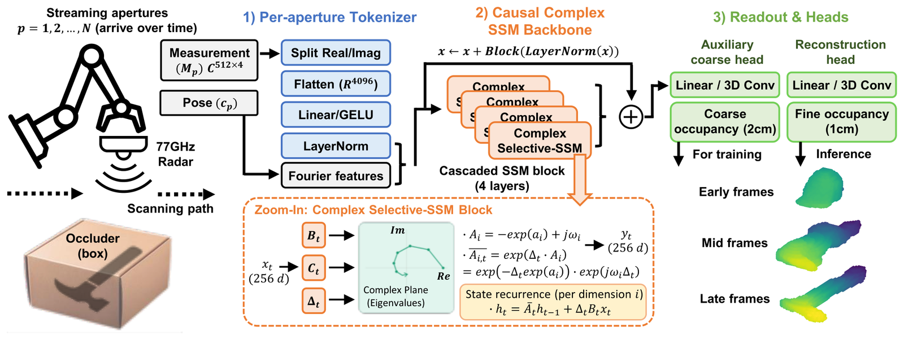
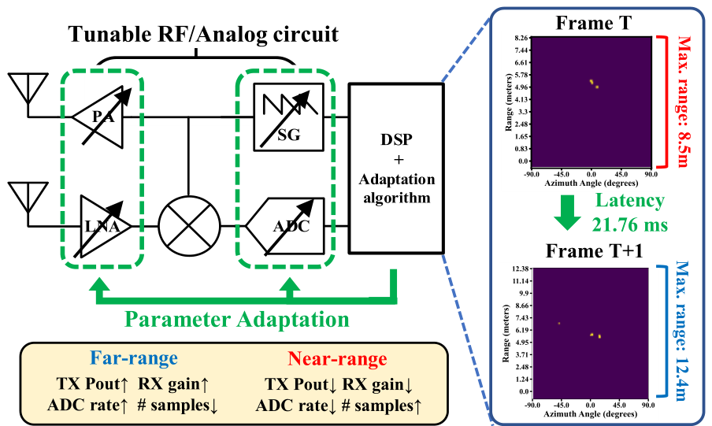
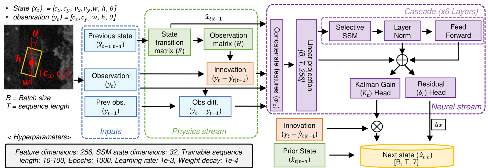
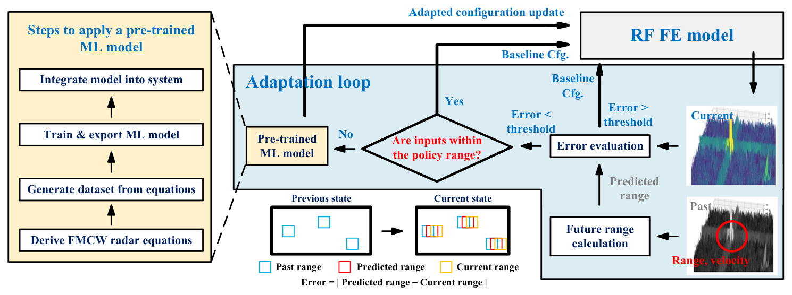
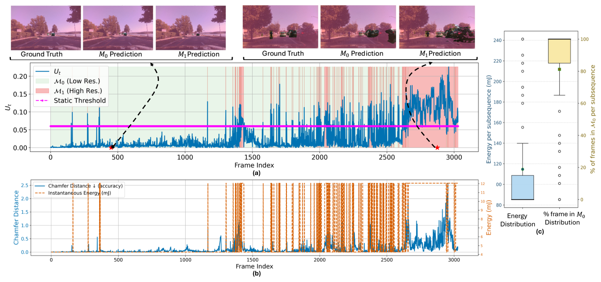
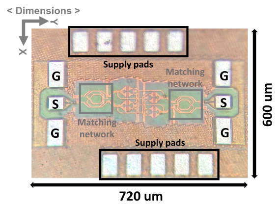

Hi, I'm Jin, an Electrical and Computer Engineering Ph.D. student at Georgia Tech working with Saibal Mukhopadhyay in the GREEN Lab.
My research focuses on resource-efficient intelligent sensing: building physics-informed state-space models for radar imaging, tracking, and filtering, adaptive mmWave radar that reconfigures its RF front-end and baseband in real time, and EM side-channel monitoring that identifies AI workloads on GPUs from their RF emissions, captured with antennas and SDRs.
Before my Ph.D., I was an RF engineer at Samsung Electronics, developing 60 GHz FMCW radar test modules and 28/39 GHz phased-array transceivers for 5G, and I designed mmWave ICs at KAIST. That background lets me work across the whole stack, from RF hardware to sequence models running on real sensor data.





